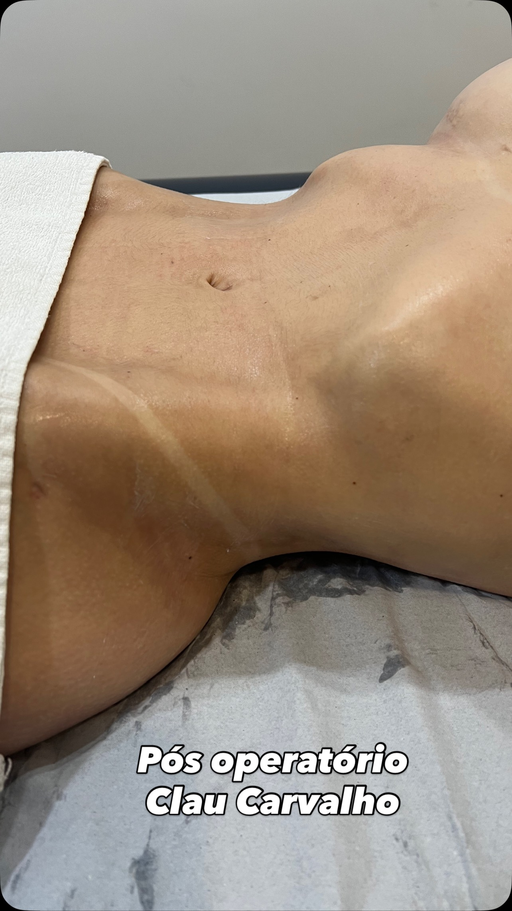

Acompanhe no Instagram
Conteúdo real da @clinicaclau
Veja de perto o trabalho, os bastidores e os resultados reais. Tudo publicado, tudo verificável.
Clau Carvalho · Goiânia
Método Aurora: técnica 100% manual, raciocínio clínico individualizado e assistência 24 horas. Resultados inesquecíveis em menos tempo.
Quem é Clau Carvalho
Claudiene Gomes de Carvalho Luz é fisioterapeuta e uma das maiores referências do Brasil em recuperação pós-operatória. Há anos transformando cirurgias em resultados que falam por si.
Criadora do Método Aurora, ela desenvolveu uma técnica exclusiva onde a excelência clínica caminha junto com o cuidado humano. Cada paciente é a única naquele momento.
Sua missão: entregar resultados inesquecíveis em menos tempo, com as mãos certas.
O Método
O Método Aurora não é um protocolo genérico. É um raciocínio clínico construído caso a caso — desenvolvido após anos de prática e centenas de recuperações bem-sucedidas.
As mãos são o instrumento. Manobras exclusivas de pressão, descompressão e cisalhamento com a pele seca. Sem cremes na fase inicial — porque nenhuma máquina substitui o raciocínio clínico que adapta cada toque ao que o seu corpo precisa.
Nenhum aparelho com calor na região operada. O aquecimento acelera a produção de fibroblastos de forma desordenada — uma das principais causas da fibrose aparente.
Na primeira fase, apenas bombeamentos leves para desobstruir os linfonodos. Os pontos e a pele recém-lesionada são completamente protegidos.
Aqui não existe "receita de bolo". Cada sessão é rigorosamente adaptada ao tipo de pele, ao procedimento, aos hábitos de vida e ao estado emocional de cada paciente. Você é a única naquele momento.
Acompanhamento contínuo com fotografias e videochamadas compartilhadas com o médico cirurgião. Uma rede de apoio físico e emocional durante todo o processo.
Por que é diferente
Você não precisa se conformar com o básico. Veja o que separa uma abordagem convencional do Método Aurora.
Nossos Serviços
Do pós-operatório de lipo ao tratamento facial: sua recuperação com quem entende. Serviços que constroem resultados — não que seguem protocolos.
Acompanhamento completo de cirurgias corporais e faciais: abdominoplastia, mastopexia, lipoaspiração, rinoplastia e outras. Recuperação em menos tempo, sem fibroses.
Tratamento especializado para a região da papada com técnica manual exclusiva. Resultados naturais, sem aparelhos invasivos.
Programa completo de estética avançada. Tratamentos personalizados para quem busca uma transformação real e duradoura.
Técnica manual
Assistência contínua
Pilares do método
Eletroterapia
Para Profissionais
A Mentoria Técnica Aurora é para fisioterapeutas e esteticistas que sabem que podem mais. Técnica avançada, posicionamento de marca premium e um plano de ação real para escalar em 30, 60 e 90 dias. Lucre com o Pós.

Imagem real · Instagram @clinicaclau
Resultados reais
A gente fala. Mas quem viveu, confirma. Cada recuperação é uma história única.
Pós-operatório é muito importante, quando não é feito da forma correta compromete o resultado da cirurgia, mesmo quando foi realizada com toda a técnica e cuidado. Parabéns!
Resultado não é só técnica. É planejamento, execução e, principalmente, acompanhamento. Obrigada pelo convite e pela confiança @clinicaclau.
Compartilhar o que sabemos é um ato de responsabilidade. Hoje, na mentoria da @clinicaclau, falar sobre ozonioterapia foi exatamente isso: mais do que técnica, foi entrega, consciência e propósito em cada troca.
A melhor! ❤️
Profissionais de excelência!
Foi lindo! 🙌
Acompanhe no Instagram
Veja de perto o trabalho, os bastidores e os resultados reais. Tudo publicado, tudo verificável.
Perguntas frequentes
O Método Aurora é uma técnica exclusiva de pós-operatório criada por Clau Carvalho. Utiliza técnica 100% manual a seco, sem eletroterapia, com raciocínio clínico individualizado para cada paciente e assistência 24 horas com acompanhamento por foto e vídeo junto ao médico cirurgião.
O Método Aurora exclui aparelhos que emitem calor na região operada porque o aquecimento acelera a produção de fibroblastos de forma desordenada, o que compromete a cicatrização e pode causar fibrose aparente. A técnica 100% manual garante controle preciso da pressão e respeito ao tecido.
A Mentoria Técnica Aurora é um programa para fisioterapeutas e esteticistas que desejam transformar sua técnica em uma carreira de alta autoridade e faturamento. Inclui módulos de técnica profissional, posicionamento de marca, conteúdo e marketing, gestão, comercial e vendas, e um plano de ação de 30, 60 e 90 dias.
O Método Aurora prevê um acompanhamento contínuo durante todo o processo de recuperação, com fotografias e videochamadas compartilhadas diretamente com o médico cirurgião. A paciente tem uma rede de apoio físico e emocional disponível a qualquer momento.
A clínica da Clau Carvalho está localizada em Goiânia, Goiás, Brasil. Para agendar uma consulta, entre em contato pelo WhatsApp ou pelo Instagram @clinicaclau.
Pronta para começar?
Vagas limitadas por semana — atendimento individualizado de verdade. Agende sua avaliação.